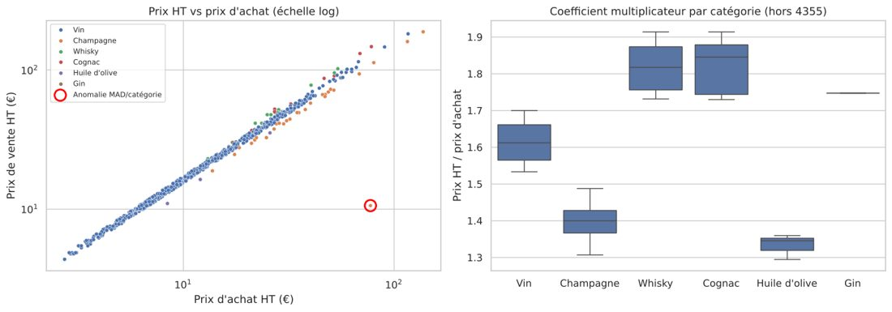

Reprendre une analyse avec l'IA, sans lui faire confiance aveuglément

- Contexte
- Mon analyse P6 OpenClassrooms des ventes et du stock d'un caviste en ligne devait servir à la direction, aux achats et à la logistique.
- Besoin métier
- Fiabiliser les indicateurs et distinguer les erreurs de prix des grands crus légitimement chers.
- Démarche
- J'ai utilisé l'IA comme relecteur, avec deux variantes de prompt notées sur une grille fixée à l'avance. J'ai comparé pandera et Great Expectations sur les mêmes règles, puis cinq méthodes de détection d'anomalies. Aucune proposition de l'IA n'a été adoptée sans être exécutée sur les vraies données.
- Résultats
- 8 erreurs de calcul corrigées. Le prompt structuré en trouvait 8 sur 8, le prompt naïf 6, et son code plantait. Une seule anomalie de prix remonte, et c'est la vraie : Isolation Forest en signalait 22.
- Impact
- Les équipes reçoivent des indicateurs justes et une liste de corrections courte. La démarche est documentée et reproductible, avec un mini-plan de formation pour les métiers.
- Limites
- La période des ventes n'est pas connue (hypothèse : 12 mois). L'expérience IA repose sur une seule exécution par prompt.